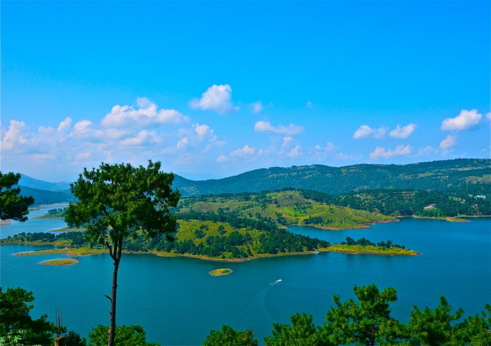

Shillong Tour Packages

Shillong is a hill station in northeast India and capital of the state of Meghalaya. It’s known for the manicured gardens at Lady Hydari Park. Nearby, Ward’s Lake is surrounded by walking trails. North, the Don Bosco Centre for Indigenous Cultures features displays on the region’s native people. Waterfalls include the Elephant Falls to the southwest. East of here, forested Shillong Peak offers city views.
| Shillong Tour Packages |
No. of Days |
Price
|
| Shillong Guwahati |
4 Nights 5 Days |
Rs. 13 990 |
| Shillong Guwahati Tour Package with Mawsmai Cave Exploration |
5 Nights 6 Days |
Rs. 21 990 |
| Amazing Meghalaya Tour Package |
4 Nights 5 Days |
Rs. 19 840 |
| Shillong, Cherrapunjee |
4 Nights 5 Days |
Rs. 20 650 |
Shillong Guwahati:
- Arrive in Guwahati Airport and Transfer to Shillong
- Meet and get assistance from our representative at Guwahati airport/railway station.
- Transfer to Shillong (4,900 ft.), called ' Scotland of the East" (100 km 3 hrs).
- En-route visit Umium Lake, a majestic placid lake with its surrounding Sylvan hills.
- On arrival at Shillong, check-in at your hotel.
- Overnight stay at Shillong.
- Excursion to Cherrapunjee
- After early breakfast drive to Cherrapunjee (4,400 ft.), the wettest place in the world.
- See the beautiful waterfall known as Nohkalikai.
- Explore the caves known as Mawsmai.
- In the evening return to Shillong.
- En-route visit Elephanta falls and Shillong peak for some breathtaking views.
- Overnight stay at Shillong.
- After breakfast visit Don Bosco Museum & Ward’s Lake.
- After that drive to Guwahati.
- On arrival check-in at the hotel.
- Visit ' Kalakshetra', a place where Assamese history and culture is presented through light and sound show.
- Return to the hotel.
- Overnight stay at Guwahati.
- After breakfast visit Kamakhya Temple, etc.
- Transfer to Guwahati airport/railway station for your onward journey.
Shillong Guwahati Tour Package with Mawsmai Cave Exploration
- Arrive in Guwahati Airport and Transfer to Shillong
- Meet and get assistance from our representative at Guwahati airport/railway station.
- Transfer to Shillong (4,900 ft.), called ' Scotland of the East" (100 km 3 hrs).
- En-route visit Umium Lake, a majestic placid lake with its surrounding Sylvan hills.
- On arrival at Shillong, check-in at your hotel.
- Overnight stay at Shillong.
- Excursion to Cherrapunjee
- After early breakfast drive to Cherrapunjee (4,400 ft.), the wettest place in the world.
- See the beautiful waterfall known as Nohkalikai.
- Explore the caves known as Mawsmai.
- In the evening return to Shillong.
- En-route visit Elephanta falls and Shillong peak for some breathtaking views.
- Overnight stay at Shillong.
- After an early breakfast, drive to Mawsynram, the wettest place in the world.
- Visit Mawjymbuin, Symper Rock.
- Enjoy the fresh air and natural beauty.
- Return to the Shillong.
- Overnight stay at Shillong.
- After breakfast, set out to visit Mawlynnong Village - the cleanest village of India.
- Enjoy the natural beauty and see the Indo-Bangladesh Border.
- Return to the Shillong.
- Overnight stay at Shillong.
- After breakfast, transfer to Guwahati.
- Check in to the resort/hotel.
- Visit Balaji Temple, Maa Kamakhya Temple, Umananda Island Temple, Assam State Museum, Zoo and Kalakshtra.
- Enjoy an evening cruise on the mighty Brahmaputra.
- Overnight stay at Guwahati.
- Transfer to Guwahati airport/railway station for your onward journey.
Amazing Meghalaya Tour Package
- Arrive in Guwahati Airport and Transfer to Shillong
- Meet and get assistance from our representative at Guwahati airport/railway station.
- Transfer to Shillong (4,900 ft.), called ' Scotland of the East" (100 km 3 hrs).
- En-route visit Umium Lake, a majestic placid lake with its surrounding Sylvan hills.
- On arrival at Shillong, check-in at your hotel.
- Overnight stay at Shillong.
- Excursion to Cherrapunjee
- After early breakfast drive to Cherrapunjee (4,400 ft.), the wettest place in the world.
- Visit the Mawphlang Sacred Grove which is bestowed with an amazing flora featuring plants, flowering trees, orchids, butterflies and is an ideal eco-tourism destination.
- See the beautiful waterfall known as Nohkalikai.
- Explore the caves known as Mawsmai.
- In the evening return to Shillong.
- En-route visit Elephanta falls and Shillong peak for some breathtaking views.
- Overnight stay at Shillong.
- Begin the morning with a drive to Mawlynnong Village (97 km/3 hrs.) to see Living Root Bridge, one of the iconic attractions of Meghalaya.
- Walk on the suspended natural-grown bridge, it is an exciting experience in the state.
- On arrival check-in at the hotel.
- Continue the day with a visit to Dawki (30 Km/1 hr.) known for its many adventure camps and adventure activities.
- Return to the hotel.
- Overnight stay at Shillong.
- Transfer to Guwahati airport/railway station for your onward journey.
Shillong, Cherrapunjee
- Arrive in Guwahati Airport and Transfer to Shillong
- Meet and get assistance from our representative at Guwahati airport/railway station.
- Transfer to Shillong (4,900 ft.), called ' Scotland of the East" (100 km 3 hrs).
- En-route visit Umium Lake, a majestic placid lake with its surrounding Sylvan hills.
- On arrival at Shillong, check-in at your hotel.
- Overnight stay at Shillong.
- AAfter breakfast visit Shillong Peak, Cathedral, Ward’s Lake, Lady Hydari Park, Don Bosco Museum.
- Later explore Police Bazar.
- Spend the evening at leisure.
- Overnight stay at Shillong.
- After breakfast drive to Cherrapunjee (56 km / 02 hrs drive).
- On the way visit Elephant falls.
- Drive further to Cherrapunjee.
- In Cherrapunjee visit Mawdok Valley Viewpoint, Seven Sister Falls, the Nohkalikai Falls (the fourth highest falls in the world), Mawsmai Cave, Dainthlen Falls, and Krem Falls.
- After exploring for the day check into Jiva resort and relax.
- Spend the evening at leisure.
- Overnight stay at Cherrapunjee.
- After breakfast drive to Mawlynnong (110 kms / 03 hrs drive).
- Explore the village and also trek for 10 min to visit the Single Decker Living Root Bridge in Riwai village.
- Also, visit The Dawki (Indo – Bangla Border).
- Later go for a boat ride in the Umngot River (the crystal clear river).
- After a day-long excursion return to Shillong.
- Overnight stay at Shillong.
- NOTE: DURING MONSOON SEASON UMNGOT RIVER WON’T BE CRYSTAL CLEAR.
- Transfer to Guwahati airport/railway station for your onward journey.